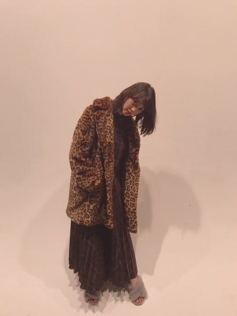
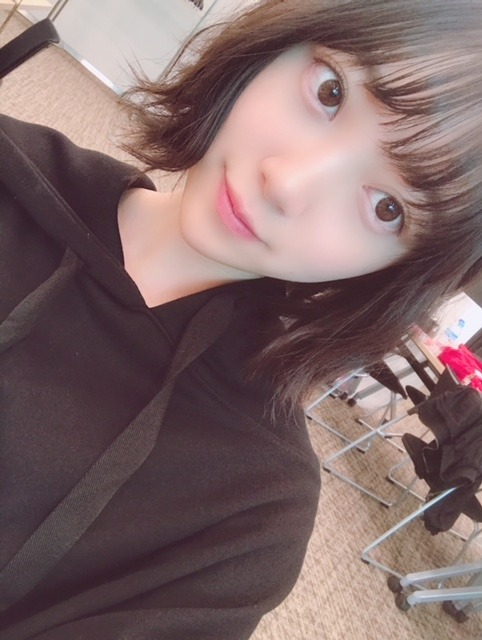
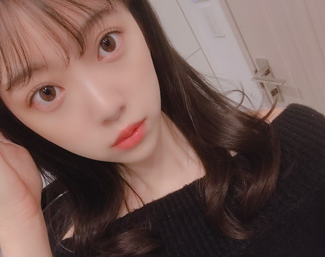
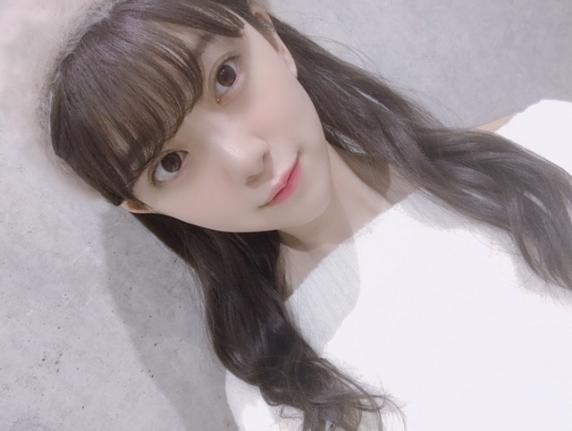
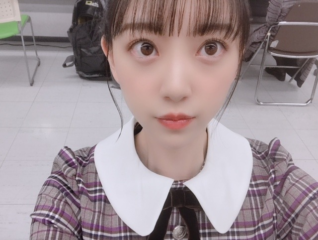

2018/1109Frigirls_blog_♡
ホットギミックで本格的に少女漫画に
はまりまして、最近は
恋するレイジーを読み始めました
おすすめがあれば教えてください☺︎

リクエストをいただいていた
女の子向けブログ。
お待たせしました☺︎
ありがたいことに
握手会にたくさんの女の子が来てくれて
いろんな質問をしてくれるのですが
詳しく答えることができなかったのが
いくつかあったので...
ブログにて失礼します☺︎
好きなブランド・洋服
あまりここ！とは決めずに
ぶらぶらして買っていますが
SNIDEL FURFUR sisterjane
ZARA Rosarymoon UNIQLOはよく着ます
海外に行った時に古着屋さんとか
セレクトショップで大量買いしてしまうので
そういうのも多いかな
ハイブランドは
SAINTLAURENT
j&m Davidson
が好きです

パーカーも好きでよく買います☺︎
これはQALBの！
数年前から
キャップやキャスケット
ベレー帽などのいろんな帽子と
サングラスを集めるのが趣味です
サングラスは空港でも買うし路面店でも
いいのを見つけたら買ってしまいます
かれこれ、10個以上はあるかなー。

ロングの茶髪はいつかしてみたい髪型の1つ☺︎
アッシュ系の髪色にもしてみたいです
ベリーショートも興味あるし...
生きているうちに
いろんな自分に出会いたいです
スキンケア・コスメ
そのときの肌の調子やマイブームで
変えていて、いまの化粧水乳液は
Celvokeを です
product SKII HAKU もお気に入り
未央奈の毎日メイク
#ベースメイク
下地...プリマヴィスタ
ファンデーション...江原道マイファンスィーアクアファンデーション012
コンシーラー...IPSAクリエイティブコンシーラー
パウダー...THREEアルティメイトダイアフェネスルースパウダー(カラーレス)01
チーク...クリニーク(ラベンダー)
#アイメイク
シャドウ...SUQQUデザイニングカラーアイズ04絢撫子
最近はずっとこれの右下と右上の色を混ぜて二重幅に塗っています
涙袋にはオンリーミネラルミネラルピグメントSM01フロスティピンクとキャンメイク ジュエリーシャドウベール03をぽんぽんと載せます
アイライン...kパレットDB 24wp
マスカラ...ヒロインメイク アドバンストフィルム02
基本アイラインとマスカラは茶色で
ナチュラルにボリュームアップします
#リップ
保湿...ミンティットローズリップバーム
色もつくし保湿がかなりされます
口紅...SUQQUモイスチャーリッチリップスティックシリーズはお気に入り
グロス...クラランスのリップオイル02とLusciouslipsの321とクルドポーボーテのブリアンアレーブルエクラ7
をよく使います
クラランスのリップオイルは定番に潤うので
何色かもってます〜
グロスや口紅は大好きなので色々集めてしまいます
#他
ハイライト...THREEシマリンググローデュオ01
これは鼻筋と涙袋に歌番組やライブの時は
必ずいれます
自然だけど全然違うし私のメイクでは欠かせません
涙袋整形した？って言われました。笑
整形はしてません。笑
こんなかんじかな？

季節やブームでコロコロ
メイクも変えているのでちょくちょく
載せますね♡
ちなみに好きな香水はmiumiuシリーズと
ジョーマローンシリーズです☺︎
あと、shiroのヘアミスト、ボディクリームも
愛用しています
ではmステ
行ってきます！！

2018/11/09 19:36
コメント(413)
ブログ更新ありがとう！
ファッションもメイクもこだわりがあって
本当にオシャレなんだね！
どうりでいつも可愛いわけだ～
個人的に思ったのはサイリウムカラーの白色と橙色が入ったコーディネートがいつか見たいなぁ♪
Mステ良かったよ♪やっぱ乃木坂最高です！
ファッションもメイクもこだわりがあって
本当にオシャレなんだね！
どうりでいつも可愛いわけだ～
個人的に思ったのはサイリウムカラーの白色と橙色が入ったコーディネートがいつか見たいなぁ♪
Mステ良かったよ♪やっぱ乃木坂最高です！
Mステお疲れ様です！
僕にはなんのことかさっぱりわからなかっけど 笑笑
漫画も読まんからわからんしな 笑笑
寒くなって来たけど体調に気をつけて頑張ってください！
応援していますーー！
僕にはなんのことかさっぱりわからなかっけど 笑笑
漫画も読まんからわからんしな 笑笑
寒くなって来たけど体調に気をつけて頑張ってください！
応援していますーー！
お疲れ様～
マンガは花とゆめから出てる、スキップビートてのが面白いよ〰️
マンガは花とゆめから出てる、スキップビートてのが面白いよ〰️
おすすめの少女マンガ～
・天堂家物語
・偽りのフレイヤ
・劉備徳子は静かに暮らしたい
・なまいきざかり
・コレットは死ぬことにした
・あのコのトリコ(完結)
・午前０時キスしに来てよ
・春待つ僕ら
・センセイ君主(完結)
・あたしの
・ショートケーキケーキ
・てをつなごうよ
こんなもんかな～
・天堂家物語
・偽りのフレイヤ
・劉備徳子は静かに暮らしたい
・なまいきざかり
・コレットは死ぬことにした
・あのコのトリコ(完結)
・午前０時キスしに来てよ
・春待つ僕ら
・センセイ君主(完結)
・あたしの
・ショートケーキケーキ
・てをつなごうよ
こんなもんかな～
Mステ観たよ！！
やっぱ未央奈が一番可愛い❤️
階段でズッキュンも嬉しいい
どうやったら、緊張せずにできるのかな？今度、自分が主催している楽団の初本番があるんだけど、緊張しない方法を教えて欲しいな！頑張ってる未央奈をこれからも見習っていこ！
やっぱ未央奈が一番可愛い❤️
階段でズッキュンも嬉しいい
どうやったら、緊張せずにできるのかな？今度、自分が主催している楽団の初本番があるんだけど、緊張しない方法を教えて欲しいな！頑張ってる未央奈をこれからも見習っていこ！
ブログ更新ありがとうございます！
Mステは録画したのでじっくり観ます！
いつも応援しています！
Mステは録画したのでじっくり観ます！
いつも応援しています！
ブログ更新ありがとう
未央奈のパーカー姿めっちゃ好き
たくさん更新してくれるから嬉しい
ずっと推しでいてね
未央奈のパーカー姿めっちゃ好き
たくさん更新してくれるから嬉しい
ずっと推しでいてね
こんばんは。
MUSICSTATIONのパフォーマンス、素敵でした。
堀さんのアップ画がなかったのが残念でしたが、前向きでもあるあの曲は大好きです。
堀さんのベレー帽も好きです。
頑張って行きましょう！
MUSICSTATIONのパフォーマンス、素敵でした。
堀さんのアップ画がなかったのが残念でしたが、前向きでもあるあの曲は大好きです。
堀さんのベレー帽も好きです。
頑張って行きましょう！
ブログ更新ありがとー
Mステ生で見てて感動して泣きそうになったよ～
Mステ生で見てて感動して泣きそうになったよ～
かわいい➰
未央奈！
今日のブログは女の子向けなので、さっぱり分かりませんでした笑
ただ、色んな種類の化粧品があるんやなぁって思いました。
パーカーは男女ともに気軽に着られて俺も好きです。
俺はもちろんグレーやけどね笑
ロング茶髪、この前の横浜の握手会の3部ぐらいにしてたよね？
普通にかわいかったよ。
髪の毛伸ばしたときは是非ともやってみて下さい。
Mステは録画しといたから、帰ったら見るね～。
早く見たい！
今日のブログは女の子向けなので、さっぱり分かりませんでした笑
ただ、色んな種類の化粧品があるんやなぁって思いました。
パーカーは男女ともに気軽に着られて俺も好きです。
俺はもちろんグレーやけどね笑
ロング茶髪、この前の横浜の握手会の3部ぐらいにしてたよね？
普通にかわいかったよ。
髪の毛伸ばしたときは是非ともやってみて下さい。
Mステは録画しといたから、帰ったら見るね～。
早く見たい！
Mステの階段では
ズッキュンをやってくれた
ヒョウ柄もあるよく似合う
豹未央奈事、堀未央奈ちゃん
ブログ更新ありがとう
やはり女子力高い未央奈ちゃん
服や小物、メイクにもこだわり高いね。
参考になります・・・⁇(^^)
これからも更なる美への高みを目指してね。
茶髪ロングも見たいなぁ〜
そして安定の外ハネ可愛いね⁉︎
ズッキュンをやってくれた
ヒョウ柄もあるよく似合う
豹未央奈事、堀未央奈ちゃん
ブログ更新ありがとう
やはり女子力高い未央奈ちゃん
服や小物、メイクにもこだわり高いね。
参考になります・・・⁇(^^)
これからも更なる美への高みを目指してね。
茶髪ロングも見たいなぁ〜
そして安定の外ハネ可愛いね⁉︎
２枚目の写真の自然な感じがいいねー
レコメンで言ってたMステ登場でのどんだけ〜期待してましたよ〜
女の子向けブログうれしい、、！
未央奈ちゃんに近づけるようにがんばるっ
詳しく書いてくれてありがとう⊂((・x・))⊃♡
未央奈ちゃんに近づけるようにがんばるっ
詳しく書いてくれてありがとう⊂((・x・))⊃♡
隣の怪物くんとかオススメだよ
未央奈ブログ更新ありがとう！
Mステ見たよ！振り付けめっちゃ好みやし未央奈もめちゃくちゃ可愛かった！！！なぁちゃんもセンターで際立ってたね〜
これから年末に向けてテレビで未央奈観れる回数増えるからめっちゃ嬉しい！
体調には気をつけてね！
Mステ見たよ！振り付けめっちゃ好みやし未央奈もめちゃくちゃ可愛かった！！！なぁちゃんもセンターで際立ってたね〜
これから年末に向けてテレビで未央奈観れる回数増えるからめっちゃ嬉しい！
体調には気をつけてね！
堀ちゃん！更新ありがとうね！
Mステ見たよ なぁちゃんと若様が最後の出演
ということもあり、いろんな気持ちが
あったんじゃないかなぁ？
ロング未央奈も可愛いです❗
Mステの堀ちゃんの歌う前の笑顔がいつになく
輝いて見えたよ～(一瞬だったけどね。)
いつも堀ちゃんの笑顔で元気になります。
ほんとにありがとう！
次の更新も楽しみにしてるよ‼
おやすみおな～
Mステ見たよ なぁちゃんと若様が最後の出演
ということもあり、いろんな気持ちが
あったんじゃないかなぁ？
ロング未央奈も可愛いです❗
Mステの堀ちゃんの歌う前の笑顔がいつになく
輝いて見えたよ～(一瞬だったけどね。)
いつも堀ちゃんの笑顔で元気になります。
ほんとにありがとう！
次の更新も楽しみにしてるよ‼
おやすみおな～
ホットギミックほんとうに楽しみです。
ベタなとこで君に届けいいとおもいますよ笑
ベタなとこで君に届けいいとおもいますよ笑
Mステ見たよ〜可愛かった〜！！！
女の子ブログうれしい！スックとスリーがおおめ？なのかな？みおなちゃん使ってるなら買いたくなっちゃう！！
女の子ブログうれしい！スックとスリーがおおめ？なのかな？みおなちゃん使ってるなら買いたくなっちゃう！！
ブログ更新ありがと〜！
気になってたコスメいっぱいある！
私も参考にして買ってみるね
気になってたコスメいっぱいある！
私も参考にして買ってみるね
ブログ更新ありがとう！
バイトでMステ見れなかった〜
めっちゃテンション下がったけど
未央奈さんのブログ見てると元気が出ました☺️
また更新待ってます ♂️
バイトでMステ見れなかった〜
めっちゃテンション下がったけど
未央奈さんのブログ見てると元気が出ました☺️
また更新待ってます ♂️
外ハネめっちゃ可愛いやん！！
Mステちょー感動しました！
ありがとうございます！
お疲れさまでした！
ありがとうございます！
お疲れさまでした！
未央奈かわいい!!
茶髪ロングの未央奈見てみたい！
茶髪ロングの未央奈見てみたい！
ブログ更新多くて嬉しい！！！メイクとかも参考になるぅ！！！前髪の巻き方とか教えてほしいです
みおなちゃん更新ありがとう！
少女漫画は NANA が一番好きかな
映画版はもう何回も観てるんだ〜
Mステリアタイでみれた〜！！！
階段降りるところ、真夏さんとズッキュンしてた？
すごい可愛かった❤︎
いつも笑顔をありがとう。
少女漫画は NANA が一番好きかな
映画版はもう何回も観てるんだ〜
Mステリアタイでみれた〜！！！
階段降りるところ、真夏さんとズッキュンしてた？
すごい可愛かった❤︎
いつも笑顔をありがとう。
未央奈ブログ更新ありがとう！
Mステお疲れ様でした！
もう少しだと思うと自然と涙が出ちゃった…
残り少ないけど、一日一日大切に過ごせたらいいね！
それじゃ、お互いがんばりましょう！
Mステお疲れ様でした！
もう少しだと思うと自然と涙が出ちゃった…
残り少ないけど、一日一日大切に過ごせたらいいね！
それじゃ、お互いがんばりましょう！
みおなさんらぶ
うわー！ありがとう！！
ずっと未央奈の涙袋のシャドウ気になってたから嬉しい！
これからも定期的に知りたいな！！
ずっと未央奈の涙袋のシャドウ気になってたから嬉しい！
これからも定期的に知りたいな！！
男の俺にはよく分からないけど
とにかくカワイイっす
とにかくカワイイっす
ブログこーしんありがとござます!!
Mステ見ました!!
僕は今まででこの曲が一番好きです
振り付けといい、歌詞といい、もう何もかもサイコー!!
可愛いかったです
あとひとつ!!
階段でのズッキュンあ
り
が
と
ご
ざ
い
ま
す
!!
Mステ見ました!!
僕は今まででこの曲が一番好きです
振り付けといい、歌詞といい、もう何もかもサイコー!!
可愛いかったです
あとひとつ!!
階段でのズッキュンあ
り
が
と
ご
ざ
い
ま
す
!!
少女漫画ね～～～
「ふしぎ遊戯」
「妖しのセレス」
しか･･･
正確には
「渡瀬悠宇」
さんしか･･･(笑)
お店にふらっと。
ときどきアタリますよね。
この間、靴を見ていて、
履きつぶした革靴の代わり
をって探してたら、
丁度ソフトバンク優勝セールをしていて、
ちょっとだけ安く購入♪
冠婚葬祭仕様なんですけどね(笑)
涙袋！
よし！注目だ！
「ふしぎ遊戯」
「妖しのセレス」
しか･･･
正確には
「渡瀬悠宇」
さんしか･･･(笑)
お店にふらっと。
ときどきアタリますよね。
この間、靴を見ていて、
履きつぶした革靴の代わり
をって探してたら、
丁度ソフトバンク優勝セールをしていて、
ちょっとだけ安く購入♪
冠婚葬祭仕様なんですけどね(笑)
涙袋！
よし！注目だ！
チャァオ～～!☆彡
みおちゃん、Mステ観てたよ～～⤴⤴❕❤❤❤❤❤笑顔❤❤❤
新曲明るくて可愛いぃ～～⤴⤴
いい曲だねぇ～～⤴⤴⤴❕❤❤❤❤❤笑顔❤❤❤
生放送、新曲披露お疲れ様でしたぁ～～⤴⤴⤴❕❤❤❤❤❤笑顔❤❤❤
写メ、素敵ですよぉ～～～⤴⤴❕❤❤❤❤❤笑顔❤❤❤
恋するレイジー❔❤❤❤❤❤笑顔
昔、女の子からの黄色声援が凄かった
アイドル的な男性グループバンドの
「レイジー」なら知っています❕❤❤❤❤❤笑顔
今検索してみたら～～～⤴⤴
なんと、ボーカルの人はよく知るぅ～～～⤴⤴⤴
影山ヒロノブさんだったと解りました❕
そう言えばあの頃のボーカルの人の声と影山ヒロノブさんの声が何かぁ似てるなぁ～～と、
ここ十数年何度も思ってました❕❤❤❤❤❤笑顔
似てるはずです❕
本人ですから❕❤❤❤❤❤笑
「レイジー懐かしい～～⤴⤴⤴❕❤❤❤」
それじゃ～みおちゃん❕❤❤❤❤❤笑顔❤❤❤
お仕事頑張ってねぇ❕❤❤❤❤❤笑顔❤❤❤
またねぇ❕❤❤❤❤❤笑顔
バイバ～～イ❕❤❤❤笑顔❤❤❤
(*^▽^)/★*☆♪
☆大人しい、おすまし！より☆彡
お疲れ様です!
あぁぁぁぁぁぁぁぁ堀ちゃ可愛い～～～ ♡
ブログ更新ありがとう！
漫画はね、「思い、思われ、ふり、ふられ」とかオススメ！！
ブログ更新ありがとう！
漫画はね、「思い、思われ、ふり、ふられ」とかオススメ！！
未央奈ちゃんブログ更新ありがとう！
女の子向けブログだから内容がほとんど分かんなかった！笑
でも可愛い！
おやすみ！
女の子向けブログだから内容がほとんど分かんなかった！笑
でも可愛い！
おやすみ！
ブログ更新ありがとう！
Mステ見たよ～
可愛かったし感動しちゃった、、、
なぁちゃんや若様が卒業するのは悲しいけど乃木坂は一人一人が輝いてるしグループはまだまだ上り坂！
一期生メンバーが卒業していって二期生、三期生が中心となるからこれから今まで以上に大変なこともたくさんあるだろうけど頑張ってね！応援してるよ！
みおなファイト！
Mステ見たよ～
可愛かったし感動しちゃった、、、
なぁちゃんや若様が卒業するのは悲しいけど乃木坂は一人一人が輝いてるしグループはまだまだ上り坂！
一期生メンバーが卒業していって二期生、三期生が中心となるからこれから今まで以上に大変なこともたくさんあるだろうけど頑張ってね！応援してるよ！
みおなファイト！
個人的に少女漫画と言えば
河原和音さんの
「先生」
「高校デビュー」
「青空エール」
高校デビューと青空エールは実写化されてる。あと作者の河原さんは「俺物語」の原作されてる方。
河原和音さんの
「先生」
「高校デビュー」
「青空エール」
高校デビューと青空エールは実写化されてる。あと作者の河原さんは「俺物語」の原作されてる方。
こんばんは～(^-^)
Mステお疲れ様でした～(^-^ゞ
見れんかった～(^-^;
Mステお疲れ様でした～(^-^ゞ
見れんかった～(^-^;
ブログ更新ありがとうございます。
私も少女漫画大好きですー！
最近のだと、「ふつうの恋子ちゃん」「素敵な彼氏」「理想的ボーイフレンド」「初めて恋をした日に読む話」などがとっても好きです〜♡
チーズインザトラップという漫画も、伏線がすごくて面白いです！！
私も少女漫画大好きですー！
最近のだと、「ふつうの恋子ちゃん」「素敵な彼氏」「理想的ボーイフレンド」「初めて恋をした日に読む話」などがとっても好きです〜♡
チーズインザトラップという漫画も、伏線がすごくて面白いです！！
未央奈ちゃん、頑張って下さい❤️
応援しています ブログ更新ありがとう
放送でも見たし、録画もいっぱい見たよ 良かったよ
応援しています ブログ更新ありがとう
放送でも見たし、録画もいっぱい見たよ 良かったよ
高野いちごさんの夢みる太陽という漫画はとても面白いですよ！
mステ帰ったら見ます！
楽しみすぎる( ^ω^ )
楽しみすぎる( ^ω^ )
ブログ更新ありがとう！♡
ほんとにメイクが好きなんだね！すごい参考になるし、真似して買います！！
少女漫画のおすすめは、｢なまいきざかり｣と｢センセイ君主｣、｢オオカミ少女と黒王子｣、｢ReReハロ｣です！！どれもすごく面白いのでよかったら読んでみてください！(*^^*)
ほんとにメイクが好きなんだね！すごい参考になるし、真似して買います！！
少女漫画のおすすめは、｢なまいきざかり｣と｢センセイ君主｣、｢オオカミ少女と黒王子｣、｢ReReハロ｣です！！どれもすごく面白いのでよかったら読んでみてください！(*^^*)
未央奈ちゃん女向けうれしすぎる！
12月握手会いくから顔ガン見しちゃう
またメイクブログ待ってる〜！
アイライン同じの使ってて嬉しい！
お仕事頑張ってね！
12月握手会いくから顔ガン見しちゃう
またメイクブログ待ってる〜！
アイライン同じの使ってて嬉しい！
お仕事頑張ってね！
アップが可愛いー！
Ｍステ最高でした。
Ｍステ最高でした。
更新待ってましたー！
大好きよ！
大好きよ！
未央ちゃんいつもありがとう！！Mステお疲れ様！！新曲披露とても鳥肌たちました^o^


ブログ更新ありがとう！！☺︎
女の子向けブログいつも嬉しい〜
憧れの人が使ってるメイクとか、すごく気になるから✨
また、ショートヘアのヘアアレンジとか
カットのオーダーの仕方とか、髪型のブログも
書いてほしいです！！☺︎
だいすき
くるみるより！！